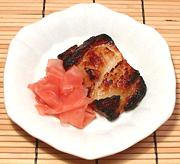

|
Sablefish with Miso GlazeJapanese | ||||
| Serves: Effort: Sched: DoAhead: |
4 app ** 24 hrs Must |
Miso glazed sablefish is the signature dish of celebrity chef and restauranteur Nobu Matsuhisa - also famous for refusing to remove endangered bluefin tuna from his menus. | |||
| Lets face facts here. This is a chef's dish - and a Japanese dish to boot. That's two strikes. It's tiny, delicate and fussy - but it's also totally delicious. It's actually rather easy - but takes care and delicate handling. Unfortunately, unlike a celebrity chef, you don't have a kitchen full of Guatemalan illegals to do this for you. | |||||
|
1 ---- 1/4 1/4 1/3 3 ---- |
# --- c c c T --- |
Sablefish (1) -- Marinade Sake Mirin Shiro Miso (2) Sugar -- Garnish Note-4 |
Prep - (12 to 24 hrs - 20 min work)
|